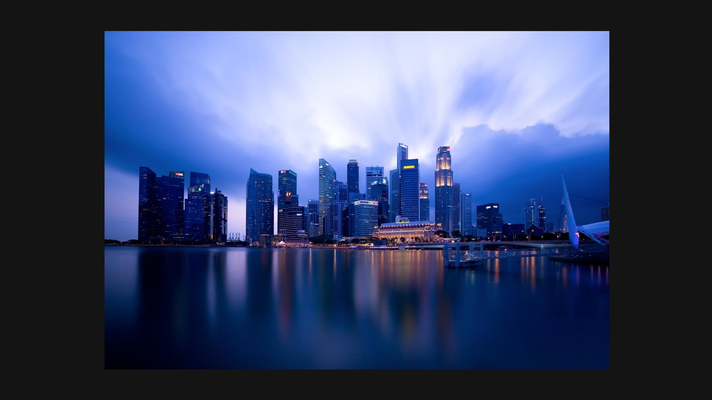
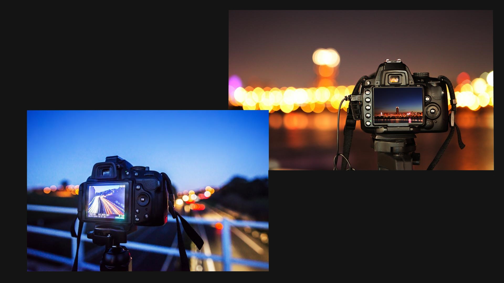
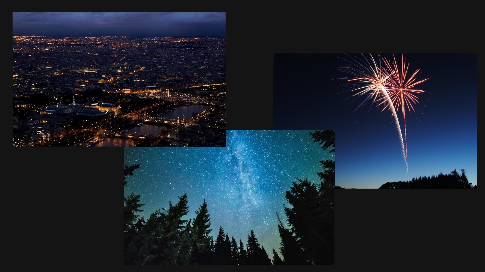

Bez obzira na to da li se profesionalno bavite fotografijom ili jednostavno volite da eksperimentišete sa različitim uglovima i kadrovima, prilikom pokretanja kamere u uslovima sa slabim osvetljenjem rezultat koji dobijete često nije zadovoljavajući. Mi vam nudimo savete kako da poboljšate rezultate vašeg noćnog fotografisanja.
S obzirom da je noću slaba svetlost, noćna fotografija zahteva korišćenje stalka za kameru i daljinskog okidača. Uslovi za noćnu fotografiju su najbolji nakon zalaska sunca kada nastupa tzv. plavi sat.

Kameru treba da podesimo na manuelni mod; ISO (osetljivost senzora kamere) treba da bude podešen na najmanje vrednosti: 75, 100 ili 200. Blic isključujemo, a vrednost otvora blende nameštamo na srednju. Brzina okidača automatska uz podešen tajmer. Treba da pogledamo fotografiju posle svakog okidanja da bismo proverili da li je jačina svetlosti dobra, jer ukoliko nije, potrebno je da promenimo vrednost otvora blende.

Za sam kraj priče o noćnoj fotografiji, treba istaći da je poželjno da posle nekoliko uzastopnih dugih ekspozicija poželjno je odmoriti fotoaparat i ugasiti ga neko vreme, pošto se senzor i druge komponente aparata dosta zagrevaju, što uzrokuje povećavanje količine šuma.
